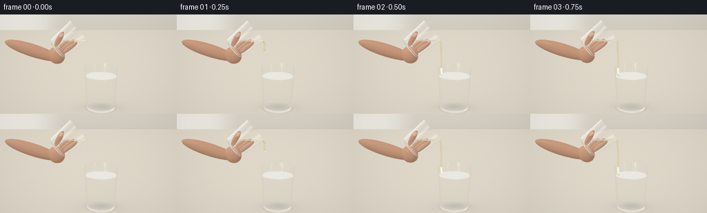
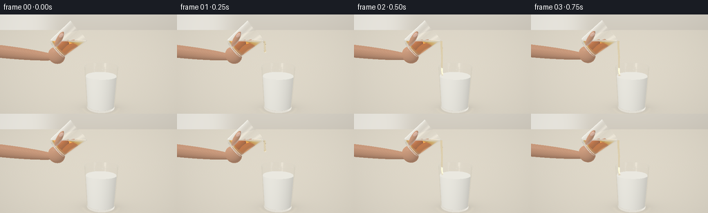
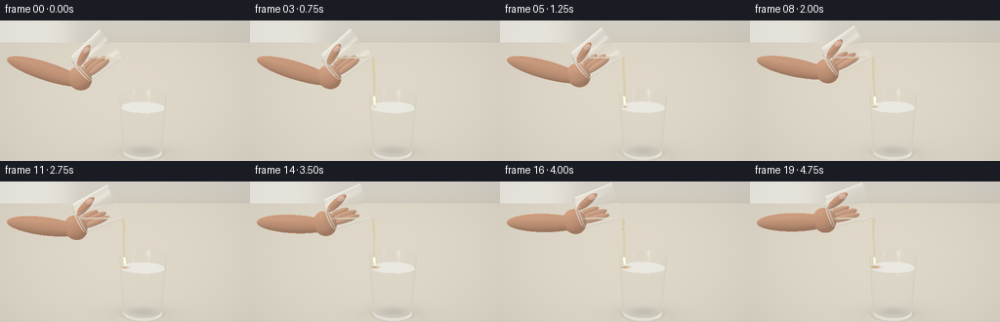
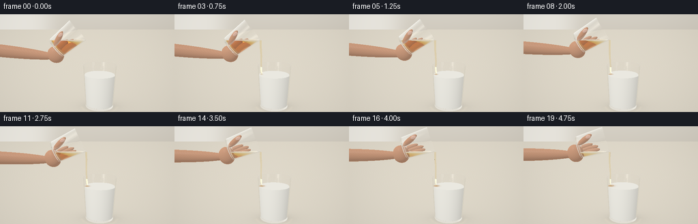
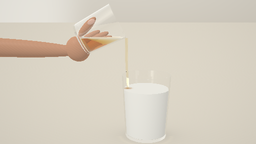

CODING AGENTS AS PIXEL WORLD MODELS
traex/GPT-6.1-Sol · phygen_137
点击播放 · 原生 RGB 像素
逐轮保存的候选
回放视频、检查图与代码变化。
每份候选均可单独播放。实际图片检查记录在下方工具轨迹中。
候选 01播放与检查图
点击播放 · 原生 RGB 像素


展开代码变化
--- 上一保存版本
+++ 本次保存版本
@@ -0,0 +1,314 @@
+"""A small, self-contained analytic RGB renderer. No external rendering engine."""
+from pathlib import Path
+import numpy as np
+from PIL import Image
+from artifact_io import save
+
+ROOT=Path(__file__).resolve().parent
+W,H=512,288
+DT=np.float32
+
+def norm(v):
+ return v / np.maximum(np.linalg.norm(v,axis=-1,keepdims=True),1e-9)
+def vec(x): return np.asarray(x,dtype=DT)
+
+# View and illumination: warm natural-light tabletop close-up.
+CAM=vec([0,4.9,10.5]); LOOK=vec([0,2.85,0])
+F=norm(LOOK-CAM); R=norm(np.cross(F,vec([0,1,0]))); U=np.cross(R,F)
+focal=9.2
+xx,yy=np.meshgrid((np.arange(W)+.5-W/2)/(W/2)*4.65,(H/2-np.arange(H)-.5)/(W/2)*4.65)
+D0=norm(F*focal+xx[...,None]*R+yy[...,None]*U).reshape(-1,3).astype(DT)
+O0=np.broadcast_to(CAM,D0.shape).copy()
+LIGHT=norm(vec([-3,6,5]))
+
+
+def environment(d):
+ # Defocused cream kitchen, with an airy window on the left.
+ v=np.clip((d[:,1]+.18)*1.8,0,1)
+ col=vec([.55,.50,.42])[None,:]*(1-v[:,None])+vec([.87,.85,.78])[None,:]*v[:,None]
+ win=np.exp(-((d[:,0]+.51)/.31)**6-((d[:,1]-.25)/.60)**6)
+ col=col*(1-.58*win[:,None])+vec([1.,.99,.94])*win[:,None]*.58
+ # Long bright reflections that describe glass curvature.
+ a=np.exp(-((d[:,0]+.50)/.075)**4-((d[:,1]-.45)/.8)**4-((d[:,2]-.65)/.6)**4)
+ b=np.exp(-((d[:,0]-.62)/.065)**4-((d[:,1]-.32)/.7)**4-((d[:,2]-.66)/.5)**4)
+ col+=a[:,None]*vec([1.8,1.75,1.58])+b[:,None]*vec([.8,.85,.91])
+ return col
+
+# Each cup is an outer frustum with the inner open cavity subtracted.
+class Cup:
+ def __init__(self,base,axis,height,r0,r1,wall=.055,bottom=.10):
+ self.base=vec(base); self.axis=norm(vec(axis)); self.h=height
+ self.e1=norm(np.cross(vec([0,0,1]),self.axis)); self.e2=np.cross(self.axis,self.e1)
+ self.basis=np.stack([self.e1,self.axis,self.e2],axis=1)
+ self.r0=r0; self.r1=r1; self.k=(r1-r0)/height;self.wall=wall;self.bottom=bottom
+ def local(self,p): return (p-self.base)@self.basis
+ def direction(self,d): return d@self.basis
+ def world(self,p): return vec(p)@self.basis.T+self.base
+ def candidates(self,o,d,inner=False,level=None):
+ # Boundary intersection candidates of capped conical volumes.
+ lo=self.local(o);ld=self.direction(d)
+ b=self.bottom if inner else 0.
+ rbase=self.r0-(self.wall if inner else 0)
+ k=self.k
+ rr=rbase+k*lo[:,1]
+ a=ld[:,0]**2+ld[:,2]**2-(k*ld[:,1])**2
+ bb=2*(lo[:,0]*ld[:,0]+lo[:,2]*ld[:,2]-rr*k*ld[:,1])
+ c=lo[:,0]**2+lo[:,2]**2-rr**2
+ disc=bb*bb-4*a*c
+ sq=np.sqrt(np.maximum(disc,0))
+ a=np.where(abs(a)<1e-10,1e-10,a)
+ roots=[(-bb-sq)/(2*a),(-bb+sq)/(2*a)]
+ out=[]
+ for t in roots:
+ p=lo+ld*t[:,None]
+ valid=(disc>=0)&(t>1e-4)&(p[:,1]>=b)&(p[:,1]<=self.h)
+ if level is not None:
+ wp=o+d*t[:,None];valid &= wp[:,1]<=level+1e-5
+ nl=norm(np.stack([p[:,0],-k*(rbase+k*p[:,1]),p[:,2]],axis=1))
+ out.append((np.where(valid,t,np.inf),nl@self.basis.T))
+ for hei,sgn in [(b,-1),(self.h,1)]:
+ t=(hei-lo[:,1])/np.where(abs(ld[:,1])>1e-9,ld[:,1],1e-9)
+ p=lo+ld*t[:,None]
+ valid=(t>1e-4)&(p[:,0]**2+p[:,2]**2<=(rbase+k*hei)**2)
+ if level is not None:
+ wp=o+d*t[:,None];valid &= wp[:,1]<=level+1e-5
+ n=np.broadcast_to(self.axis*sgn,o.shape)
+ out.append((np.where(valid,t,np.inf),n))
+ if level is not None:
+ t=(level-o[:,1])/np.where(abs(d[:,1])>1e-9,d[:,1],1e-9)
+ p=lo+ld*t[:,None]
+ valid=(t>1e-4)&(p[:,1]>=b)&(p[:,1]<=self.h)&(p[:,0]**2+p[:,2]**2<=(rbase+k*p[:,1])**2)
+ n=np.zeros_like(o);n[:,1]=1
+ out.append((np.where(valid,t,np.inf),n))
+ return out
+ def hit(self,o,d,kind='glass',level=None):
+ n=len(o);ts=np.full(n,np.inf,DT); ns=np.zeros_like(o)
+ def adopt(t,nor):
+ nonlocal ts,ns
+ take=t<ts;ts=np.where(take,t,ts);ns=np.where(take[:,None],nor,ns)
+ if kind=='glass':
+ # Test outer skin. At the open mouth only its annulus is glass.
+ for i,(t,no) in enumerate(self.candidates(o,d)):
+ pp=o+d*np.where(np.isfinite(t),t,0)[:,None];p=self.local(pp)
+ cavity=(p[:,1]>self.bottom+1e-4)&(p[:,0]**2+p[:,2]**2<(self.r0-self.wall+self.k*p[:,1])**2-1e-6)
+ adopt(np.where(cavity,np.inf,t),no)
+ for i,(t,no) in enumerate(self.candidates(o,d,True)):
+ if i==3: continue # no sheet over the cavity
+ adopt(t,-no)
+ else:
+ for t,no in self.candidates(o,d,True,level): adopt(t,no)
+ return ts,ns
+
+receiver=Cup([.78,.06,0],[0,1,0],2.68,.89,1.04,.047,.12)
+
+# Spheres stretched into ellipsoids provide rounded skin, thumb, and fingertips.
+class Ellipsoid:
+ def __init__(self,center,radii,mat=4,basis=None):
+ self.center=vec(center);self.r=vec(radii);self.mat=mat
+ self.basis=np.eye(3,dtype=DT) if basis is None else basis
+ def hit(self,o,d):
+ q=(o-self.center)@self.basis/self.r;v=d@self.basis/self.r
+ a=np.sum(v*v,axis=1);b=np.sum(q*v,axis=1);c=np.sum(q*q,axis=1)-1
+ dis=b*b-a*c;sq=np.sqrt(np.maximum(dis,0));t=(-b-sq)/a
+ t=np.where(t>1e-4,t,(-b+sq)/a)
+ p=q+v*t[:,None];n=norm((p/self.r)@self.basis.T)
+ return np.where((dis>=0)&(t>1e-4),t,np.inf),n
+
+def capsule(a,b,r1,r2,mat=4):
+ a=vec(a);b=vec(b);axis=norm(b-a);z=norm(np.cross(axis,vec([0,0,1])))
+ basis=np.stack([z,axis,np.cross(z,axis)],axis=1)
+ return Ellipsoid((a+b)*.5,[r1,np.linalg.norm(b-a)*.5+r1,r2],mat,basis)
+
+# Honey thread: a sequence of gently tapering analytic conical tube segments.
+class Thread:
+ def __init__(self,start,end,t,width):
+ self.parts=[]
+ length=start[1]-end[1]
+ for j in range(9):
+ u0=j/9;u1=(j+1)/9
+ def point(u):
+ # A little gravitational stretch and an unhurried viscous sway.
+ return vec([start[0]+.055*u+ .019*np.sin(u*7-t*2)*np.sin(np.pi*u), start[1]-length*u, start[2]+.016*np.sin(u*4+t)*u])
+ a=point(u0);b=point(u1);axis=norm(a-b)
+ def rad(u): return width*(.95-.33*u)+.009*np.exp(-((u-.91)/.15)**2)
+ self.parts.append(Cup(b,axis,np.linalg.norm(a-b),rad(u1),rad(u0),0,0))
+ def hit(self,o,d):
+ ts=np.full(len(o),np.inf,DT);ns=np.zeros_like(o)
+ for c in self.parts:
+ # Ignore internal segment caps, retain the true continuous sidewalls.
+ for t,n in c.candidates(o,d)[:2]:
+ take=t<ts;ts=np.where(take,t,ts);ns=np.where(take[:,None],n,ns)
+ return ts,ns
+
+
+def setup(frame):
+ t=frame/4
+ s=frame/19
+ ang=np.deg2rad(51+23*(s*s*(3-2*s)))
+ axis=vec([np.sin(ang),np.cos(ang),0]);e1=vec([-np.cos(ang),np.sin(ang),0])
+ # The lower lip stays steady while the hand rotates the base upwards.
+ lip=vec([-.08,4.26+.028*np.sin(s*2),.02])
+ base=lip-axis*1.68+e1*.76
+ cup=Cup(base,axis,1.68,.66,.76,.043,.08)
+ level=lip[1]+.014
+ milk=2.13+.048*max(0,(frame-2)/17)
+ objects=[(receiver,'glass',1,None),(receiver,'liquid',3,milk),(cup,'glass',1,None),(cup,'liquid',2,level)]
+ if frame>=1:
+ # The first frames show the honey stretching down, then steadily entering milk.
+ reach=min(1.,(frame-.6)/1.4)
+ end=vec([lip[0]+.05,lip[1]-(lip[1]-milk)*reach,lip[2]])
+ th=Thread(lip+vec([.01,-.005,0]),end,t,.076-.012*s)
+ objects.append((th,None,2,None))
+ if reach<1:
+ objects.append((Ellipsoid(end,[.075,.11,.075],2),None,2,None))
+ # A natural supporting hand comes in from the left. The cup remains clearly visible.
+ # Local geometry rotates along with the tumbler.
+ cw=lambda p:cup.world(p)
+ objs=[
+ capsule(cw([.20,.24,.55]),cw([.43,.85,.57]),.16,.125), # thumb in front
+ Ellipsoid(cw([.40,.79,.68]),[.095,.155,.028],5,cup.basis), # translucent nail
+ capsule(cw([-.42,.10,-.36]),cw([-.45,1.00,-.39]),.16,.14),
+ capsule(cw([-.22,.02,-.53]),cw([-.24,.94,-.57]),.155,.13),
+ capsule(cw([-.04,-.05,-.57]),cw([-.02,.65,-.61]),.14,.125),
+ Ellipsoid(cw([-.28,-.30,.02]),[.53,.49,.36],4,cup.basis),
+ capsule(cw([-.30,-.47,.01]),vec([-4.6,4.10,.01]),.39,.32),
+ ]
+ for obj in objs:objects.append((obj,None,obj.mat,None))
+ return objects,milk,lip
+
+
+def nearest(o,d,objects):
+ count=len(o);best=np.full(count,np.inf,DT);normal=np.zeros_like(o);mat=np.zeros(count,np.int8)
+ for obj,kind,m,level in objects:
+ ts,ns=obj.hit(o,d,kind,level) if isinstance(obj,Cup) else obj.hit(o,d)
+ take=ts<best;best=np.where(take,ts,best);normal=np.where(take[:,None],ns,normal);mat=np.where(take,m,mat)
+ # The matte limestone counter beneath the glass.
+ tt=-o[:,1]/np.where(abs(d[:,1])>1e-9,d[:,1],1e-9)
+ take=(tt>1e-4)&(tt<best)
+ best=np.where(take,tt,best);normal[take]=vec([0,1,0]);mat[take]=6
+ return best,normal,mat
+
+
+def opaque(p,n,d,m,t,milk,lip):
+ N=len(p);col=np.zeros((N,3),DT)
+ ndl=np.maximum(np.sum(n*LIGHT,axis=1),0)
+ # Large source soft lighting, with convincing curved sides on the milk glass.
+ shade=.51+.47*ndl
+ skin=(m==4)|(m==5)
+ if np.any(skin):
+ ps=p[skin];ns=n[skin]
+ mod=.98+.025*np.sin(ps[:,0]*45+ps[:,1]*63)*np.sin(ps[:,2]*53)
+ color=vec([.66,.345,.205]) if False else vec([.68,.375,.235])
+ col[skin]=color*shade[skin,None]*mod[:,None]
+ # Warm subsurface appearance along contour.
+ rim=np.maximum(0,1-np.abs(np.sum(ns*d[skin],axis=1)))**3
+ col[skin]+=rim[:,None]*vec([.15,.071,.027])
+ nail=m==5
+ col[nail]=vec([.80,.51,.39])*shade[nail,None]+.04
+ ismilk=m==3
+ if np.any(ismilk):
+ ps=p[ismilk];ns=n[ismilk]
+ mc=vec([.96,.948,.883])*(.62+.36*ndl[ismilk,None])
+ # Milk is optically dense: amber mixing remains confined to the surface.
+ top=ns[:,1]>.8
+ xc=lip[0]+.063;zc=lip[2]
+ dx=ps[:,0]-xc;dz=ps[:,2]-zc
+ rad=np.sqrt(dx*dx+dz*dz);theta=np.arctan2(dz,dx)
+ age=max(0,t-.5)
+ pool=np.exp(-(rad/(.075+.036*age))**2)*min(1,age*2)
+ spiralrad=.10+.025*age+ .026*np.sin(theta*2+age*.9)
+ swirl=np.exp(-((rad-spiralrad)/(.017+.002*age))**2)*.25*min(1,age)
+ # Golden, slowly spreading ribbon on the white surface, not an explosive splash.
+ amt=np.clip((pool*.89+swirl)*top,0,.93)
+ mc=mc*(1-amt[:,None])+vec([.52,.255,.032])*amt[:,None]
+ ring=np.sin(rad*63-age*5)*np.exp(-rad*4)*.010*top*min(1,age)
+ mc+=ring[:,None]
+ col[ismilk]=mc
+ table=m==6
+ if np.any(table):
+ ps=p[table]
+ tex=(np.sin(ps[:,0]*18+ps[:,2]*2)*np.sin(ps[:,2]*29+ps[:,0]*1.5)*.004+np.sin(ps[:,0]*131+ps[:,2]*92)*.002)
+ tc=vec([.74,.692,.592])+tex[:,None]
+ # Soft contact shadow; glass caustics appear as subdued, warm arcs.
+ r=((ps[:,0]-.84)/1.08)**2+(ps[:,2]/.72)**2
+ shadow=.23*np.exp(-r*1.7)+.075*np.exp(-r*.42)
+ tc*=1-shadow[:,None]
+ ar=np.sqrt((ps[:,0]-.78)**2+(ps[:,2]*1.1)**2)
+ cau=.035*np.exp(-((ar-1.13)/.095)**2)*(ps[:,2]>.1)
+ tc+=cau[:,None]*vec([1,.8,.44])
+ col[table]=tc
+ # Broad white window reflected by polished surfaces.
+ refl=d-2*np.sum(d*n,axis=1)[:,None]*n
+ gl=np.exp(-((refl[:,0]+.40)/.23)**2-((refl[:,1]-.70)/.24)**2-((refl[:,2]-.52)/.37)**2)
+ coeff=np.where(m==3,.12,np.where(m==5,.18,np.where(m==4,.025,.012)))
+ col+=gl[:,None]*coeff[:,None]
+ return col
+
+
+def render(frame):
+ objects,milk,lip=setup(frame)
+ N=W*H
+ color=np.zeros((N,3),DT); throughput=np.ones((N,3),DT)
+ o=O0.copy();d=D0.copy();ids=np.arange(N)
+ medium=np.zeros(N,np.int8)
+ # Deterministic specular transmission with environment Fresnel reflection.
+ # Repeated interface tracing naturally creates thick rims and the glass foot.
+ for bounce in range(13):
+ if len(ids)==0:break
+ tt,n,mat=nearest(o,d,objects)
+ # Beer-Lambert absorption in amber honey; transparent glass is nearly neutral.
+ dist=np.minimum(tt,20)
+ ab=np.zeros((len(ids),3),DT)
+ ab[medium==1]=vec([.009,.006,.003])
+ ab[medium==2]=vec([.20,.88,2.9])
+ throughput[ids]*=np.exp(-ab*dist[:,None])
+ miss=~np.isfinite(tt)
+ if np.any(miss): color[ids[miss]]+=throughput[ids[miss]]*environment(d[miss])
+ opaque_mask=(mat>=3)&(~miss)
+ safe_t=np.where(np.isfinite(tt),tt,0)
+ p=o+d*safe_t[:,None]
+ if np.any(opaque_mask):
+ cc=opaque(p[opaque_mask],n[opaque_mask],d[opaque_mask],mat[opaque_mask],frame/4,milk,lip)
+ color[ids[opaque_mask]]+=throughput[ids[opaque_mask]]*cc
+ keep=(mat==1)|(mat==2)
+ if not np.any(keep):break
+ ids=ids[keep]; p=p[keep];n=n[keep];d=d[keep];m=mat[keep];med=medium[keep]
+ entering=np.sum(d*n,axis=1)<0
+ nor=np.where(entering[:,None],n,-n)
+ newmed=np.where(entering,m,0)
+ ior=np.where(med==1,1.50,np.where(med==2,1.465,1.0))
+ ni=np.where(newmed==1,1.50,np.where(newmed==2,1.465,1.0))
+ eta=ior/ni;cos=-np.sum(d*nor,axis=1)
+ sin2=eta*eta*(1-cos*cos);tir=sin2>1
+ fres=((ior-ni)/(ior+ni))**2
+ fres=fres+(1-fres)*(1-cos)**5
+ fres=np.where(tir,1,fres)
+ rd=d+2*cos[:,None]*nor
+ # Environment highlights, with matte-counter tones for downward rays.
+ rc=environment(rd)
+ downward=rd[:,1]<-.10
+ rc[downward]=vec([.69,.648,.55])
+ color[ids]+=throughput[ids]*fres[:,None]*rc
+ throughput[ids]*=(1-fres[:,None])
+ tr=eta[:,None]*d+(eta*cos-np.sqrt(np.maximum(0,1-sin2)))[:,None]*nor
+ d=norm(tr);o=p+d*.00065;medium=newmed
+ active=(np.max(throughput[ids],axis=1)>.006)&(~tir)
+ ids=ids[active];d=d[active];o=o[active];medium=medium[active]
+ if len(ids):color[ids]+=throughput[ids]*environment(d)
+ image=color.reshape(H,W,3)
+ # Gentle photographic tone curve, fixed exposure and unobtrusive vignette.
+ vign=1-.08*((xx/4.65)**2+(yy/3.2)**2)
+ image*=vign[...,None]
+ image=np.clip(image,0,1)
+ image=image**(1/2.2)
+ arr=np.uint8(np.clip(image*255+.5,0,255))
+ return np.array(Image.fromarray(arr).resize((256,144),Image.Resampling.LANCZOS))
+
+if __name__=='__main__':
+ import time
+ start=__import__('time').time()
+ frames=[]
+ for f in range(20):
+ frames.append(render(f))
+ print(f'frame {f:02d}, elapsed {time.time()-start:.1f}s',flush=True)
+ save(np.stack(frames),ROOT)
候选 02播放与检查图
点击播放 · 原生 RGB 像素


展开代码变化
--- 上一保存版本
+++ 本次保存版本
@@ -47,8 +47,8 @@
def candidates(self,o,d,inner=False,level=None):
# Boundary intersection candidates of capped conical volumes.
lo=self.local(o);ld=self.direction(d)
- b=self.bottom if inner else 0.
- rbase=self.r0-(self.wall if inner else 0)
+ b=(self.bottom+(.006 if level is not None else 0.)) if inner else 0.
+ rbase=self.r0-(self.wall+(.006 if level is not None else 0.) if inner else 0)
k=self.k
rr=rbase+k*lo[:,1]
a=ld[:,0]**2+ld[:,2]**2-(k*ld[:,1])**2
@@ -171,7 +171,7 @@
capsule(cw([-.22,.02,-.53]),cw([-.24,.94,-.57]),.155,.13),
capsule(cw([-.04,-.05,-.57]),cw([-.02,.65,-.61]),.14,.125),
Ellipsoid(cw([-.28,-.30,.02]),[.53,.49,.36],4,cup.basis),
- capsule(cw([-.30,-.47,.01]),vec([-4.6,4.10,.01]),.39,.32),
+ capsule(cw([-.30,-.47,.01]),vec([-9.5,4.10,.01]),.39,.32),
]
for obj in objs:objects.append((obj,None,obj.mat,None))
return objects,milk,lip
候选 03播放与检查图
点击播放 · 原生 RGB 像素

展开代码变化
--- 上一保存版本
+++ 本次保存版本
@@ -32,6 +32,9 @@
a=np.exp(-((d[:,0]+.50)/.075)**4-((d[:,1]-.45)/.8)**4-((d[:,2]-.65)/.6)**4)
b=np.exp(-((d[:,0]-.62)/.065)**4-((d[:,1]-.32)/.7)**4-((d[:,2]-.66)/.5)**4)
col+=a[:,None]*vec([1.8,1.75,1.58])+b[:,None]*vec([.8,.85,.91])
+ # Low-contrast defocused vertical forms and illumination, never distracting.
+ dark=np.exp(-((d[:,0]-.37)/.12)**2-((d[:,1]+.015)/.22)**2)
+ col*=1-.12*dark[:,None]
return col
# Each cup is an outer frustum with the inner open cavity subtracted.
@@ -147,7 +150,7 @@
ang=np.deg2rad(51+23*(s*s*(3-2*s)))
axis=vec([np.sin(ang),np.cos(ang),0]);e1=vec([-np.cos(ang),np.sin(ang),0])
# The lower lip stays steady while the hand rotates the base upwards.
- lip=vec([-.08,4.26+.028*np.sin(s*2),.02])
+ lip=vec([.39,4.26+.028*np.sin(s*2),.02])
base=lip-axis*1.68+e1*.76
cup=Cup(base,axis,1.68,.66,.76,.043,.08)
level=lip[1]+.014
@@ -157,7 +160,7 @@
# The first frames show the honey stretching down, then steadily entering milk.
reach=min(1.,(frame-.6)/1.4)
end=vec([lip[0]+.05,lip[1]-(lip[1]-milk)*reach,lip[2]])
- th=Thread(lip+vec([.01,-.005,0]),end,t,.076-.012*s)
+ th=Thread(lip+vec([.01,-.005,0]),end,t,.091-.011*s)
objects.append((th,None,2,None))
if reach<1:
objects.append((Ellipsoid(end,[.075,.11,.075],2),None,2,None))
@@ -171,7 +174,7 @@
capsule(cw([-.22,.02,-.53]),cw([-.24,.94,-.57]),.155,.13),
capsule(cw([-.04,-.05,-.57]),cw([-.02,.65,-.61]),.14,.125),
Ellipsoid(cw([-.28,-.30,.02]),[.53,.49,.36],4,cup.basis),
- capsule(cw([-.30,-.47,.01]),vec([-9.5,4.10,.01]),.39,.32),
+ capsule(cw([-.30,-.47,.01]),vec([-9.5,4.10,.01]),.43,.34),
]
for obj in objs:objects.append((obj,None,obj.mat,None))
return objects,milk,lip
@@ -215,7 +218,7 @@
dx=ps[:,0]-xc;dz=ps[:,2]-zc
rad=np.sqrt(dx*dx+dz*dz);theta=np.arctan2(dz,dx)
age=max(0,t-.5)
- pool=np.exp(-(rad/(.075+.036*age))**2)*min(1,age*2)
+ pool=np.exp(-(rad/(.095+.045*age))**2)*min(1,age*2)
spiralrad=.10+.025*age+ .026*np.sin(theta*2+age*.9)
swirl=np.exp(-((rad-spiralrad)/(.017+.002*age))**2)*.25*min(1,age)
# Golden, slowly spreading ribbon on the white surface, not an explosive splash.
@@ -260,7 +263,7 @@
dist=np.minimum(tt,20)
ab=np.zeros((len(ids),3),DT)
ab[medium==1]=vec([.009,.006,.003])
- ab[medium==2]=vec([.20,.88,2.9])
+ ab[medium==2]=vec([.35,2.1,6.2])
throughput[ids]*=np.exp(-ab*dist[:,None])
miss=~np.isfinite(tt)
if np.any(miss): color[ids[miss]]+=throughput[ids[miss]]*environment(d[miss])
候选 04播放与检查图
可观测工具轨迹
实际执行的命令与返回图片。
命令 1exit 0
/bin/bash -lc "ls -la && cat prompt.txt && printf '\\n---RULES---\\n' && cat GENERATION_RULES.md && printf '\\n---SPEC---\\n' && cat task_spec.json"
命令 2exit 0
/bin/bash -lc "cat artifact_io.py && python - <<'PY' import importlib.util for x in ['numpy','PIL','scipy']: print(x, bool(importlib.util.find_spec(x))) PY"
命令 3exit 0
/bin/bash -lc "cat > generate.py <<'PY'
\"\"\"A small, self-contained analytic RGB renderer. No external rendering engine.\"\"\"
from pathlib import Path
import numpy as np
from PIL import Image
from artifact_io import save
ROOT=Path(__file__).resolve().parent
W,H=512,288
DT=np.float32
def norm(v):
return v / np.maximum(np.linalg.norm(v,axis=-1,keepdims=True),1e-9)
def vec(x): return np.asarray(x,dtype=DT)
# View and illumination: warm natural-light tabletop close-up.
CAM=vec([0,4.9,10.5]); LOOK=vec([0,2.85,0])
F=norm(LOOK-CAM); R=norm(np.cross(F,vec([0,1,0]))); U=np.cross(R,F)
focal=9.2
xx,yy=np.meshgrid((np.arange(W)+.5-W/2)/(W/2)*4.65,(H/2-np.arange(H)-.5)/(W/2)*4.65)
D0=norm(F*focal+xx[...,None]*R+yy[...,None]*U).reshape(-1,3).astype(DT)
O0=np.broadcast_to(CAM,D0.shape).copy()
LIGHT=norm(vec([-3,6,5]))
def environment(d):
# Defocused cream kitchen, with an airy window on the left.
v=np.clip((d[:,1]+.18)*1.8,0,1)
col=vec([.55,.50,.42])[None,:]*(1-v[:,None])+vec([.87,.85,.78])[None,:]*v[:,None]
win=np.exp(-((d[:,0]+.51)/.31)**6-((d[:,1]-.25)/.60)**6)
col=col*(1-.58*win[:,None])+vec([1.,.99,.94])*win[:,None]*.58
# Long bright reflections that describe glass curvature.
a=np.exp(-((d[:,0]+.50)/.075)**4-((d[:,1]-.45)/.8)**4-((d[:,2]-.65)/.6)**4)
b=np.exp(-((d[:,0]-.62)/.065)**4-((d[:,1]-.32)/.7)**4-((d[:,2]-.66)/.5)**4)
col+=a[:,None]*vec([1.8,1.75,1.58])+b[:,None]*vec([.8,.85,.91])
return col
# Each cup is an outer frustum with the inner open cavity subtracted.
class Cup:
def __init__(self,base,axis,height,r0,r1,wall=.055,bottom=.10):
self.base=vec(base); self.axis=norm(vec(axis)); self.h=height
self.e1=norm(np.cross(vec([0,0,1]),self.axis)); self.e2=np.cross(self.axis,self.e1)
self.basis=np.stack([self.e1,self.axis,self.e2],axis=1)
self.r0=r0; self.r1=r1; self.k=(r1-r0)/height;self.wall=wall;self.bottom=bottom
def local(self,p): return (p-self.base)@self.basis
def direction(self,d): return d@self.basis
def world(self,p): return vec(p)@self.basis.T+self.base
def candidates(self,o,d,inner=False,level=None):
# Boundary intersection candidates of capped conical volumes.
lo=self.local(o);ld=self.direction(d)
b=self.bottom if inner else 0.
rbase=self.r0-(self.wall if inner else 0)
k=self.k
rr=rbase+k*lo[:,1]
a=ld[:,0]**2+ld[:,2]**2-(k*ld[:,1])**2
bb=2*(lo[:,0]*ld[:,0]+lo[:,2]*ld[:,2]-rr*k*ld[:,1])
c=lo[:,0]**2+lo[:,2]**2-rr**2
disc=bb*bb-4*a*c
sq=np.sqrt(np.maximum(disc,0))
a=np.where(abs(a)<1e-10,1e-10,a)
roots=[(-bb-sq)/(2*a),(-bb+sq)/(2*a)]
out=[]
for t in roots:
p=lo+ld*t[:,None]
valid=(disc>=0)&(t>1e-4)&(p[:,1]>=b)&(p[:,1]<=self.h)
if level is not None:
wp=o+d*t[:,None];valid &= wp[:,1]<=level+1e-5
nl=norm(np.stack([p[:,0],-k*(rbase+k*p[:,1]),p[:,2]],axis=1))
out.append((np.where(valid,t,np.inf),nl@self.basis.T))
for hei,sgn in [(b,-1),(self.h,1)]:
t=(hei-lo[:,1])/np.where(abs(ld[:,1])>1e-9,ld[:,1],1e-9)
p=lo+ld*t[:,None]
valid=(t>1e-4)&(p[:,0]**2+p[:,2]**2<=(rbase+k*hei)**2)
if level is not None:
wp=o+d*t[:,None];valid &= wp[:,1]<=level+1e-5
n=np.broadcast_to(self.axis*sgn,o.shape)
out.append((np.where(valid,t,np.inf),n))
if level is not None:
t=(level-o[:,1])/np.where(abs(d[:,1])>1e-9,d[:,1],1e-9)
p=lo+ld*t[:,None]
valid=(t>1e-4)&(p[:,1]>=b)&(p[:,1]<=self.h)&(p[:,0]**2+p[:,2]**2<=(rbase+k*p[:,1])**2)
n=np.zeros_like(o);n[:,1]=1
out.append((np.where(valid,t,np.inf),n))
return out
def hit(self,o,d,kind='glass',level=None):
n=len(o);ts=np.full(n,np.inf,DT); ns=np.zeros_like(o)
def adopt(t,nor):
nonlocal ts,ns
take=t<ts;ts=np.where(take,t,ts);ns=np.where(take[:,None],nor,ns)
if kind=='glass':
# Test outer skin. At the open mouth only its annulus is glass.
for i,(t,no) in enumerate(self.candidates(o,d)):
pp=o+d*np.where(np.isfinite(t),t,0)[:,None];p=self.local(pp)
cavity=(p[:,1]>self.bottom+1e-4)&(p[:,0]**2+p[:,2]**2<(self.r0-self.wall+self.k*p[:,1])**2-1e-6)
adopt(np.where(cavity,np.inf,t),no)
for i,(t,no) in enumerate(self.candidates(o,d,True)):
if i==3: continue # no sheet over the cavity
adopt(t,-no)
else:
for t,no in self.candidates(o,d,True,level): adopt(t,no)
return ts,ns
receiver=Cup([.78,.06,0],[0,1,0],2.68,.89,1.04,.047,.12)
# Spheres stretched into ellipsoids provide rounded skin, thumb, and fingertips.
class Ellipsoid:
def __init__(self,center,radii,mat=4,basis=None):
self.center=vec(center);self.r=vec(radii);self.mat=mat
self.basis=np.eye(3,dtype=DT) if basis is None else basis
def hit(self,o,d):
q=(o-self.center)@self.basis/self.r;v=d@self.basis/self.r
a=np.sum(v*v,axis=1);b=np.sum(q*v,axis=1);c=np.sum(q*q,axis=1)-1
dis=b*b-a*c;sq=np.sqrt(np.maximum(dis,0));t=(-b-sq)/a
t=np.where(t>1e-4,t,(-b+sq)/a)
p=q+v*t[:,None];n=norm((p/self.r)@self.basis.T)
return np.where((dis>=0)&(t>1e-4),t,np.inf),n
def capsule(a,b,r1,r2,mat=4):
a=vec(a);b=vec(b);axis=norm(b-a);z=norm(np.cross(axis,vec([0,0,1])))
basis=np.stack([z,axis,np.cross(z,axis)],axis=1)
return Ellipsoid((a+b)*.5,[r1,np.linalg.norm(b-a)*.5+r1,r2],mat,basis)
# Honey thread: a sequence of gently tapering analytic conical tube segments.
class Thread:
def __init__(self,start,end,t,width):
self.parts=[]
length=start[1]-end[1]
for j in range(9):
u0=j/9;u1=(j+1)/9
def point(u):
# A little gravitational stretch and an unhurried viscous sway.
return vec([start[0]+.055*u+ .019*np.sin(u*7-t*2)*np.sin(np.pi*u), start[1]-length*u, start[2]+.016*np.sin(u*4+t)*u])
a=point(u0);b=point(u1);axis=norm(a-b)
def rad(u): return width*(.95-.33*u)+.009*np.exp(-((u-.91)/.15)**2)
self.parts.append(Cup(b,axis,np.linalg.norm(a-b),rad(u1),rad(u0),0,0))
def hit(self,o,d):
ts=np.full(len(o),np.inf,DT);ns=np.zeros_like(o)
for c in self.parts:
# Ignore internal segment caps, retain the true continuous sidewalls.
for t,n in c.candidates(o,d)[:2]:
take=t<ts;ts=np.where(take,t,ts);ns=np.where(take[:,None],n,ns)
return ts,ns
def setup(frame):
t=frame/4
s=frame/19
ang=np.deg2rad(51+23*(s*s*(3-2*s)))
axis=vec([np.sin(ang),np.cos(ang),0]);e1=vec([-np.cos(ang),np.sin(ang),0])
# The lower lip stays steady while the hand rotates the base upwards.
lip=vec([-.08,4.26+.028*np.sin(s*2),.02])
base=lip-axis*1.68+e1*.76
cup=Cup(base,axis,1.68,.66,.76,.043,.08)
level=lip[1]+.014
milk=2.13+.048*max(0,(frame-2)/17)
objects=[(receiver,'glass',1,None),(receiver,'liquid',3,milk),(cup,'glass',1,None),(cup,'liquid',2,level)]
if frame>=1:
# The first frames show the honey stretching down, then steadily entering milk.
reach=min(1.,(frame-.6)/1.4)
end=vec([lip[0]+.05,lip[1]-(lip[1]-milk)*reach,lip[2]])
th=Thread(lip+vec([.01,-.005,0]),end,t,.076-.012*s)
objects.append((th,None,2,None))
if reach<1:
objects.append((Ellipsoid(end,[.075,.11,.075],2),None,2,None))
# A natural supporting hand comes in from the left. The cup remains clearly visible.
# Local geometry rotates along with the tumbler.
cw=lambda p:cup.world(p)
objs=[
capsule(cw([.20,.24,.55]),cw([.43,.85,.57]),.16,.125), # thumb in front
Ellipsoid(cw([.40,.79,.68]),[.095,.155,.028],5,cup.basis), # translucent nail
capsule(cw([-.42,.10,-.36]),cw([-.45,1.00,-.39]),.16,.14),
capsule(cw([-.22,.02,-.53]),cw([-.24,.94,-.57]),.155,.13),
capsule(cw([-.04,-.05,-.57]),cw([-.02,.65,-.61]),.14,.125),
Ellipsoid(cw([-.28,-.30,.02]),[.53,.49,.36],4,cup.basis),
capsule(cw([-.30,-.47,.01]),vec([-4.6,4.10,.01]),.39,.32),
]
for obj in objs:objects.append((obj,None,obj.mat,None))
return objects,milk,lip
def nearest(o,d,objects):
count=len(o);best=np.full(count,np.inf,DT);normal=np.zeros_like(o);mat=np.zeros(count,np.int8)
for obj,kind,m,level in objects:
ts,ns=obj.hit(o,d,kind,level) if isinstance(obj,Cup) else obj.hit(o,d)
take=ts<best;best=np.where(take,ts,best);normal=np.where(take[:,None],ns,normal);mat=np.where(take,m,mat)
# The matte limestone counter beneath the glass.
tt=-o[:,1]/np.where(abs(d[:,1])>1e-9,d[:,1],1e-9)
take=(tt>1e-4)&(tt<best)
best=np.where(take,tt,best);normal[take]=vec([0,1,0]);mat[take]=6
return best,normal,mat
def opaque(p,n,d,m,t,milk,lip):
N=len(p);col=np.zeros((N,3),DT)
ndl=np.maximum(np.sum(n*LIGHT,axis=1),0)
# Large source soft lighting, with convincing curved sides on the milk glass.
shade=.51+.47*ndl
skin=(m==4)|(m==5)
if np.any(skin):
ps=p[skin];ns=n[skin]
mod=.98+.025*np.sin(ps[:,0]*45+ps[:,1]*63)*np.sin(ps[:,2]*53)
color=vec([.66,.345,.205]) if False else vec([.68,.375,.235])
col[skin]=color*shade[skin,None]*mod[:,None]
# Warm subsurface appearance along contour.
rim=np.maximum(0,1-np.abs(np.sum(ns*d[skin],axis=1)))**3
col[skin]+=rim[:,None]*vec([.15,.071,.027])
nail=m==5
col[nail]=vec([.80,.51,.39])*shade[nail,None]+.04
ismilk=m==3
if np.any(ismilk):
ps=p[ismilk];ns=n[ismilk]
mc=vec([.96,.948,.883])*(.62+.36*ndl[ismilk,None])
# Milk is optically dense: amber mixing remains confined to the surface.
top=ns[:,1]>.8
xc=lip[0]+.063;zc=lip[2]
dx=ps[:,0]-xc;dz=ps[:,2]-zc
rad=np.sqrt(dx*dx+dz*dz);theta=np.arctan2(dz,dx)
age=max(0,t-.5)
pool=np.exp(-(rad/(.075+.036*age))**2)*min(1,age*2)
spiralrad=.10+.025*age+ .026*np.sin(theta*2+age*.9)
swirl=np.exp(-((rad-spiralrad)/(.017+.002*age))**2)*.25*min(1,age)
# Golden, slowly spreading ribbon on the white surface, not an explosive splash.
amt=np.clip((pool*.89+swirl)*top,0,.93)
mc=mc*(1-amt[:,None])+vec([.52,.255,.032])*amt[:,None]
ring=np.sin(rad*63-age*5)*np.exp(-rad*4)*.010*top*min(1,age)
mc+=ring[:,None]
col[ismilk]=mc
table=m==6
if np.any(table):
ps=p[table]
tex=(np.sin(ps[:,0]*18+ps[:,2]*2)*np.sin(ps[:,2]*29+ps[:,0]*1.5)*.004+np.sin(ps[:,0]*131+ps[:,2]*92)*.002)
tc=vec([.74,.692,.592])+tex[:,None]
# Soft contact shadow; glass caustics appear as subdued, warm arcs.
r=((ps[:,0]-.84)/1.08)**2+(ps[:,2]/.72)**2
shadow=.23*np.exp(-r*1.7)+.075*np.exp(-r*.42)
tc*=1-shadow[:,None]
ar=np.sqrt((ps[:,0]-.78)**2+(ps[:,2]*1.1)**2)
cau=.035*np.exp(-((ar-1.13)/.095)**2)*(ps[:,2]>.1)
tc+=cau[:,None]*vec([1,.8,.44])
col[table]=tc
# Broad white window reflected by polished surfaces.
refl=d-2*np.sum(d*n,axis=1)[:,None]*n
gl=np.exp(-((refl[:,0]+.40)/.23)**2-((refl[:,1]-.70)/.24)**2-((refl[:,2]-.52)/.37)**2)
coeff=np.where(m==3,.12,np.where(m==5,.18,np.where(m==4,.025,.012)))
col+=gl[:,None]*coeff[:,None]
return col
def render(frame):
objects,milk,lip=setup(frame)
N=W*H
color=np.zeros((N,3),DT); throughput=np.ones((N,3),DT)
o=O0.copy();d=D0.copy();ids=np.arange(N)
medium=np.zeros(N,np.int8)
# Deterministic specular transmission with environment Fresnel reflection.
# Repeated interface tracing naturally creates thick rims and the glass foot.
for bounce in range(13):
if len(ids)==0:break
tt,n,mat=nearest(o,d,objects)
# Beer-Lambert absorption in amber honey; transparent glass is nearly neutral.
dist=np.minimum(tt,20)
ab=np.zeros((len(ids),3),DT)
ab[medium==1]=vec([.009,.006,.003])
ab[medium==2]=vec([.20,.88,2.9])
throughput[ids]*=np.exp(-ab*dist[:,None])
miss=~np.isfinite(tt)
if np.any(miss): color[ids[miss]]+=throughput[ids[miss]]*environment(d[miss])
opaque_mask=(mat>=3)&(~miss)
safe_t=np.where(np.isfinite(tt),tt,0)
p=o+d*safe_t[:,None]
if np.any(opaque_mask):
cc=opaque(p[opaque_mask],n[opaque_mask],d[opaque_mask],mat[opaque_mask],frame/4,milk,lip)
color[ids[opaque_mask]]+=throughput[ids[opaque_mask]]*cc
keep=(mat==1)|(mat==2)
if not np.any(keep):break
ids=ids[keep]; p=p[keep];n=n[keep];d=d[keep];m=mat[keep];med=medium[keep]
entering=np.sum(d*n,axis=1)<0
nor=np.where(entering[:,None],n,-n)
newmed=np.where(entering,m,0)
ior=np.where(med==1,1.50,np.where(med==2,1.465,1.0))
ni=np.where(newmed==1,1.50,np.where(newmed==2,1.465,1.0))
eta=ior/ni;cos=-np.sum(d*nor,axis=1)
sin2=eta*eta*(1-cos*cos);tir=sin2>1
fres=((ior-ni)/(ior+ni))**2
fres=fres+(1-fres)*(1-cos)**5
fres=np.where(tir,1,fres)
rd=d+2*cos[:,None]*nor
# Environment highlights, with matte-counter tones for downward rays.
rc=environment(rd)
downward=rd[:,1]<-.10
rc[downward]=vec([.69,.648,.55])
color[ids]+=throughput[ids]*fres[:,None]*rc
throughput[ids]*=(1-fres[:,None])
tr=eta[:,None]*d+(eta*cos-np.sqrt(np.maximum(0,1-sin2)))[:,None]*nor
d=norm(tr);o=p+d*.00065;medium=newmed
active=(np.max(throughput[ids],axis=1)>.006)&(~tir)
ids=ids[active];d=d[active];o=o[active];medium=medium[active]
if len(ids):color[ids]+=throughput[ids]*environment(d)
image=color.reshape(H,W,3)
# Gentle photographic tone curve, fixed exposure and unobtrusive vignette.
vign=1-.08*((xx/4.65)**2+(yy/3.2)**2)
image*=vign[...,None]
image=np.clip(image,0,1)
image=image**(1/2.2)
arr=np.uint8(np.clip(image*255+.5,0,255))
return np.array(Image.fromarray(arr).resize((256,144),Image.Resampling.LANCZOS))
if __name__=='__main__':
import time
start=__import__('time').time()
frames=[]
for f in range(20):
frames.append(render(f))
print(f'frame {f:02d}, elapsed {time.time()-start:.1f}s',flush=True)
save(np.stack(frames),ROOT)
PY
OPENBLAS_NUM_THREADS=1 python generate.py"命令 4exit 0
/bin/bash -lc "python - <<'PY' p='generate.py' s=open(p).read().replace(\"b=self.bottom if inner else 0.\",\"b=(self.bottom+(.006 if level is not None else 0.)) if inner else 0.\").replace(\"rbase=self.r0-(self.wall if inner else 0)\",\"rbase=self.r0-(self.wall+(.006 if level is not None else 0.) if inner else 0)\").replace(\"vec([-4.6,4.10,.01])\",\"vec([-9.5,4.10,.01])\") open(p,'w').write(s) PY OPENBLAS_NUM_THREADS=1 python generate.py"
命令 5exit 0
/bin/bash -lc "python - <<'PY'
p='generate.py'
s=open(p).read().replace(\"lip=vec([-.08,4.26\", \"lip=vec([.39,4.26\").replace(\"vec([.20,.88,2.9])\", \"vec([.35,2.1,6.2])\").replace(\".076-.012*s\", \".091-.011*s\").replace(\".075+.036*age\", \".095+.045*age\")
# A more substantial wrist blends organically into the gripping palm.
s=s.replace(\".39,.32),\", \".43,.34),\")
# A fixed softly blurred studio background, with natural vertical lighting.
s=s.replace(\"return col\\n\\n# Each cup\", \"\"\"# Low-contrast defocused vertical forms and illumination, never distracting.
dark=np.exp(-((d[:,0]-.37)/.12)**2-((d[:,1]+.015)/.22)**2)
col*=1-.12*dark[:,None]
return col
# Each cup\"\"\")
open(p,'w').write(s)
PY
OPENBLAS_NUM_THREADS=1 python generate.py"视觉工具实际返回图片 1

视觉工具实际返回图片 2

视觉工具实际返回图片 3

视觉工具实际返回图片 4

保存候选 4 份；完成命令 5 次；可验证图片返回 4 张。原始 API 响应与完整日志保留在本地。